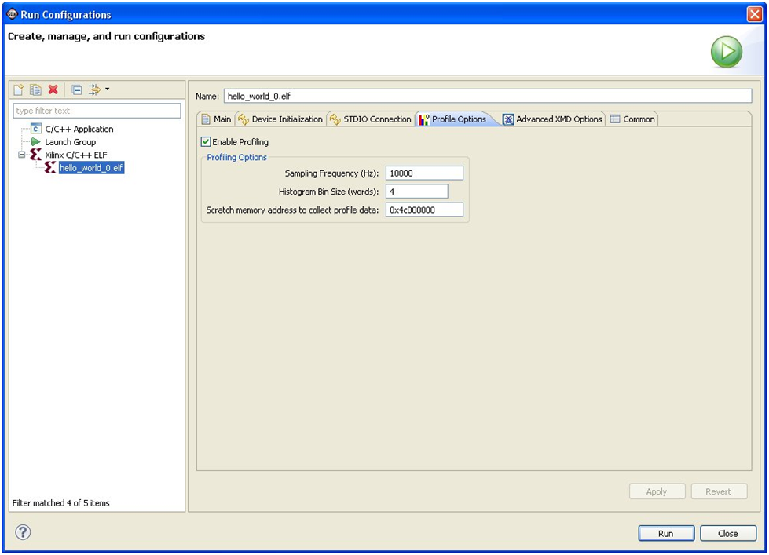

Profile overview
To profile an application, you must create a run configuration and specify the profiling parameters in the Profiler tab of the Run dialog box.

The following sections explain the concepts involved in profile configurations.
The sampling frequency determines the frequency of which timer interrupts are generated. When you set a higher frequency, more samples are obtained. This provides more accuracy, but it is highly software-intrusive due to the number of interrupts because more calls are inserted to collect data.
The program text region is divided into multiple bins. Each bin has an associated counter. When a program is interrupted because of the sampling frequency, the counter for the bin that corresponds to the PC value is incremented. The bin size determines the accuracy of the PC location is in the sample.
When you set a smaller bin size, the program text region is divided into a large number of small bins. This allows a more accurate sample because profile data can be attributed to a specific area of the text region. For example, if you set the bin size to 4 bytes, you can narrow down the specific instruction at which the program execution occurred to four bytes of the text region. The disadvantage to using a smaller bin size is that it requires a large number of bins to cover the entire text region, so a large amount of memory space is required for storing profile data.
When you set a larger bin size, the program text region is divided into a small number of large bins. This requires less memory space for storing profile data. However, it is much more difficult to identify specific text regions for the sample because of the larger bin size. For example, if you set the bin size to 40 bytes, you can only determine that the program was executing instructions between x and x+40 on each profile interrupt.
This parameter indicates where in memory the profile data must be stored. This memory must lie outside the program memory area (including the text, data, heap, and stack), and should not be overwritten.
Copyright © 1995-2012 Xilinx, Inc. All rights reserved.